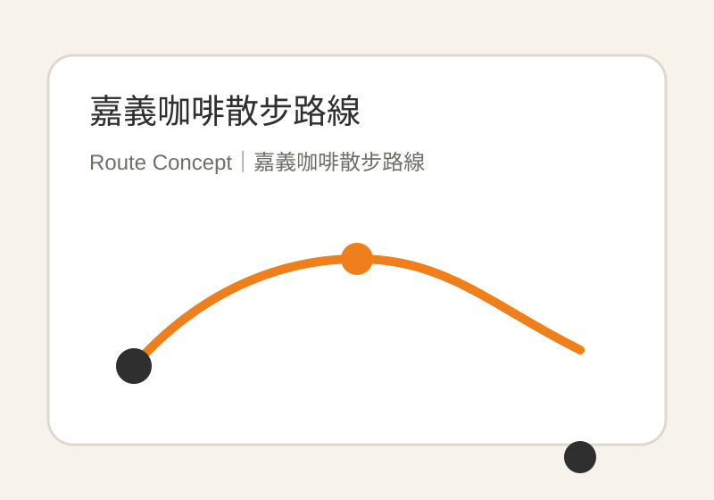

SEO／GEO CONTENT CASE STUDY
嘉義咖啡 SEO／GEO 內容企劃
以搜尋意圖、SERP 競品分析與地方內容策略為基礎，將嘉義咖啡、老屋與半日旅遊需求整理成可執行的文章頁面，讓內容從資訊架構出發，並能支援長尾查詢與地理情境搜尋。

Project Snapshot
Primary Keyword
嘉義咖啡廳
Geographic Long-tail
嘉義火車站咖啡廳
Search Intent
咖啡探索＋半日行程規劃
Content Format
四小時咖啡散步路線
Status
Independent Portfolio Project
本案例為個人 SEO／GEO 作品集專案，非店家付費合作。